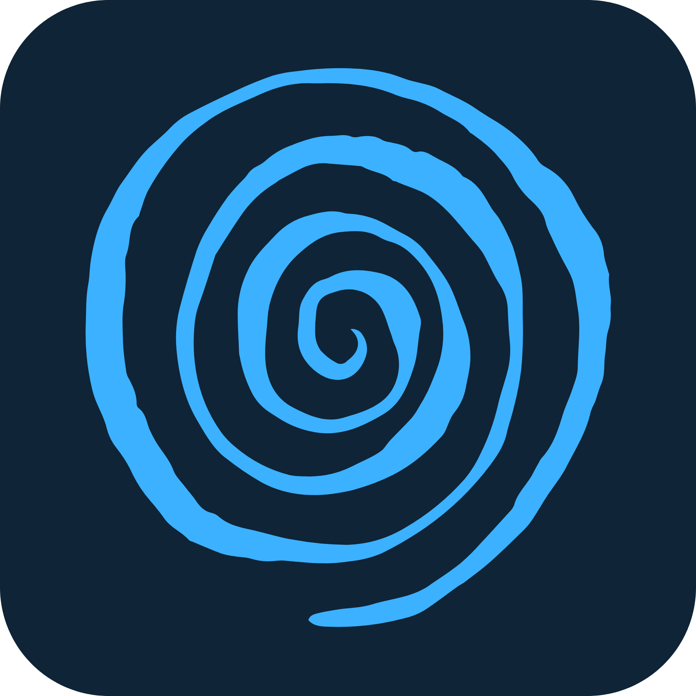

Tap Beta
A calm, clutter-free browser for Windows, with Tappy, an AI helper that runs entirely on your own PC.
Download for Windows“Windows protected your PC”?
Tap is made by one independent developer and isn't code-signed yet (a signing certificate costs hundreds of euros a year). Windows shows this warning for any unsigned app it hasn't seen many times before. To install:
- Open TapSetup.exe.
- On the blue screen, click More info.
- Click Run anyway.
The installer needs no admin rights, and Tap installs just for your Windows user.
What's inside
Tappy, on your PC
Ask questions, summarize pages, fact-check claims. Tappy runs on a local AI model, so your conversations stay on your computer.
Out of your way
A clean, immersive layout with no clutter, plus a floating bubble for quick questions from anywhere.
Your files too
Ask Tappy about documents on your PC: PDFs, Word and Excel files.
Updates itself
Tap checks for new versions once a day and asks before installing them.
Good to know
- Tappy needs Ollama (free). Tap's setup screen walks you through installing it and downloading a model.
- Local AI is demanding: 16 GB of RAM is recommended, and a graphics card makes Tappy much faster.
- This is a beta. Things will break. The Help panel inside Tap has a button to copy the error log for bug reports.
- To uninstall: Windows Settings → Apps → Tap. You'll be asked whether to keep your data.